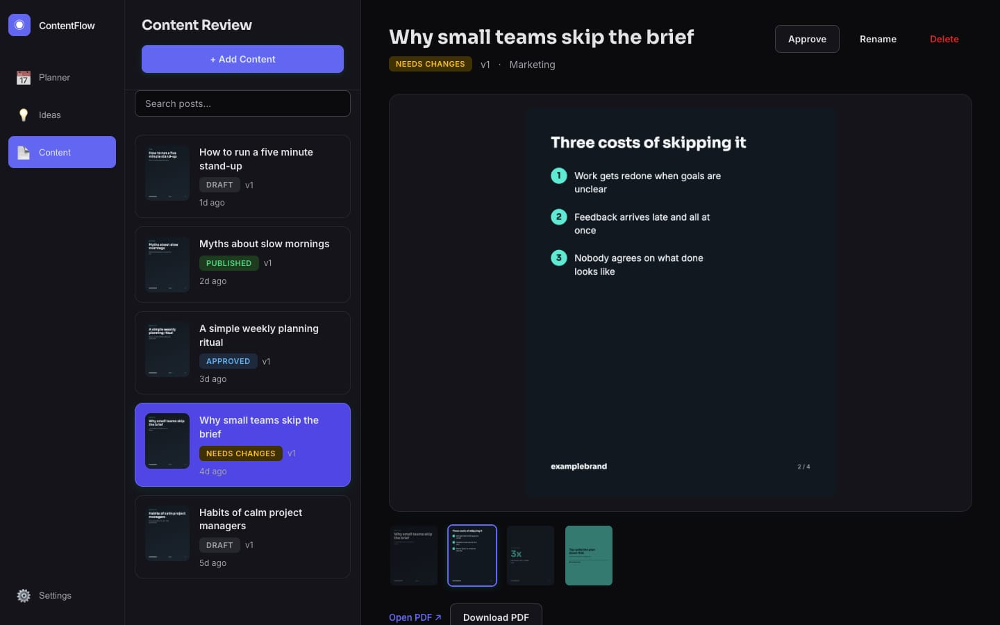
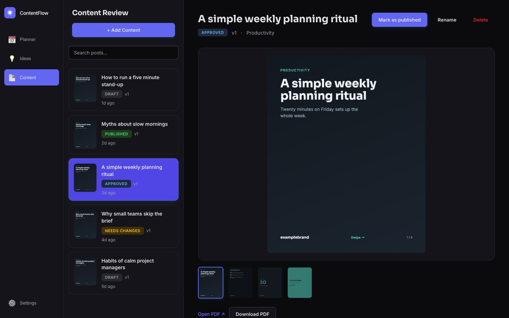

Case study · AI & automation
AI social carousel pipeline with approval dashboard
Turns a short topic into researched copy, branded carousel slides and a PDF, with a review dashboard and weekly planner before publishing.
At a glance
- Who it's for
- Solo creators and small marketing teams who publish carousel content regularly.
- Core stack
- Node.js, Express, PostgreSQL, Playwright
- What sets it apart
- One flow from a short topic to reviewed, branded carousel assets, with a graceful fallback and a weekly planning layer.
What it looks like in use
A planner of posts, each with a clear status, and a review panel where a person has the final say.
This week
+ Plan Week+ Add Content
Mon, LinkedIn carousel
DraftTue, LinkedIn carousel
Needs changesWed, LinkedIn carousel
ApprovedThu, LinkedIn carousel
Published
Review: Why small teams skip the brief (Needs changes)
The middle slide is too wordy. Can we shorten it?Comment
Earlier versionsKept
Add a comment for the next revision
Revise from feedbackApprove
Real screens from the working product (sample data)


From idea to approved post
You pick a topic
Type one idea, or plan a whole week of ideas and let the tool suggest the rest.
The tool drafts the post
It researches the topic, writes captions and turns them into branded slides.
A person reviews it
You read the slides, leave comments and ask for a revision if something is off.
Changes keep earlier versions
A revision starts from your comments, and the older version is saved, not overwritten.
It is ready to post
Once approved, it is ready to post. A LinkedIn publishing route exists; other networks are still prototypes.
The challenge
Producing consistent social carousels means repeating the same chain by hand: pick a topic, research it, write platform-specific captions, design slides, export a PDF and publish.
Each step lives in a different tool, so output slows down and quality varies. Topics need to be pulled on a schedule, branched by format, reviewed by a human and only then handed to publishing and analytics.
The solution
A Node.js pipeline researches a topic with a search-grounded LLM, then generates a structured brief (hook, points, stat, call to action, image keywords) and per-platform captions.
Branded HTML slide templates are rendered to PNG and PDF with a headless browser, and stock photography is fetched per slide on a best-effort basis. An Express dashboard backed by Postgres lets a reviewer comment, revise, approve, pick alternative images and schedule posts. A weekly planner outlines a week of ideas, optionally AI-planned, and bulk-generates every post.
For your technical teamhow it works under the hood
Review lifecycle of one post
Key features
What the system does, as built in the codebase.
- 01
Search-grounded research
Gathers current facts for a topic before any copy is written, and continues without them if the call fails.
- 02
Resilient copy generation
Calls one LLM and falls back to topic-aware mock content on failure, so generation never hard-stops.
- 03
Branded slide rendering
Fills cover, bullet, stat and call-to-action templates and exports PNG slides plus a combined PDF.
- 04
Stock image selection
Fetches portrait photos per slide from keywords and lets the reviewer choose among candidates.
- 05
Review workflow
Comments, status changes, versioned revisions and history for each post.
- 06
Weekly planner
Day and time-slot planning, AI idea generation, per-idea regeneration, approval and bulk generation.
- 07
Platform publish adapters
Per-platform payload builders for several networks, plus a real LinkedIn text and image call path.
- 08
Workflow export
The same stages are mirrored as an n8n workflow definition.
How it fits together
From a short topic to reviewed, publish-ready carousel assets.
- Topic or weekly plancalendar and idea input
- Research and copysearch-grounded LLM with mock fallback
- Slide plan and renderHTML templates to PNG and PDF
- Review dashboardcomments, revisions, approval
- Postgresposts, versions, schedule
- Publish adaptersper-platform payloads
- The review dashboard reads and writes Postgres.
- Approved posts flow to the publish adapters.
- Stock images feed the render step.
Implementation notes
Engineering decisions worth knowing about.
Swappable pipeline stages
Copy, slide plan, render, approval, publish and analytics modules are orchestrated by a single runner, so each stage can move from mock to real independently.
Flexible storage
Postgres stores posts with JSONB briefs, slide plans, comments and history, and uses additive migrations for new columns such as scheduling.
Timezone-aware scheduling
Scheduled time is stored as a timezone-aware timestamp after a documented round-trip bug with naive timestamps.
Fixed-size rendering
Headless Chromium renders slides at a fixed portrait size, and pdf-lib merges them into one document.
Best-effort integrations
Research and image fetches return null instead of throwing, so one failing integration degrades a slide rather than the run.
REST API
Posts, previews, uploads, comments, status and weekly plans are exposed to a vanilla JavaScript front end.
Approval gate
The human approval gate is mocked in the command-line pipeline and real in the dashboard.
Technology stack
Taken from the project's dependency and config files.
- Runtime
- Node.js
- Express
- AI
- Anthropic SDK
- Google Generative AI SDK
- Rendering
- Playwright
- sharp
- pdf-lib
- Data
- PostgreSQL (pg)
- Front end
- Vanilla JavaScript
- HTML
- CSS
- Automation
- n8n workflow export
For your technical teamtechnology layers
Technology stack by layer
Business value
What the system enables. No numbers are claimed.
- Removes repeated manual steps between idea, copy, design and export for carousel content.
- Keeps a human review gate in the dashboard, with revision history, before anything is published.
- Makes weekly content planning a bulk operation instead of post-by-post work.
- Degrades gracefully when an AI provider or image source is unavailable.
Need a system like this built?
Tell us what it needs to do and we will scope it with you on a call.